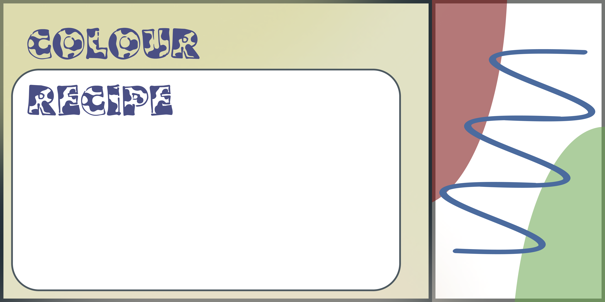

PURPOSE
It saves every colour recipe by saving the colours and number of drops used. It also lets you instantly view the mixed shade, its HEX and RGB values, letting you save your time and organize your recipes for future projects.

It saves every colour recipe by saving the colours and number of drops used. It also lets you instantly view the mixed shade, its HEX and RGB values, letting you save your time and organize your recipes for future projects.
1. Add Your Paints - Enter each paint using its HEX or RGB color code.
2. Record the Drops - Specify how many drops of each paint you have used to make the shade.
3. View Your Mixed Shade - Website will calculate and then display the shade along with its HEX and RGB color code.
4. Save Your Recipe - Save the whole recipe so that you can easily recreate the same shade whenever you need it.
5. Browse Your History - You can either search, edit or favourite your recipes for quick access and less wastage of time.
As someone who is interseted in painting and enjoys doing it, I used to mix paints to create shades over and over again. But while mixing paints, I often forgot the exact colours or the number of drops I had used to make that shade so, whenever I wanted to recreate the same shade, I had to start experimenting all over again, which wasted both my time and my paint and it also annoyed me a lot, so this inspired me to create colour recipe, a website that lets users save their paint recipes (shades) and can create shades of their own choice whenever they want and need to.
This website is for people who enjoys painting and crafting, thus being helpful for people like artists, painters and people who enjoy DIY and crafting.
- There is HEX ↔ RGB conversion
- Your recipe gets saved in history
- You can edit recipe
- Favourite recipe for quick access
- Search saved recipes to find the shade
- There is live paint mixing too
- You will also be provided with the shade name